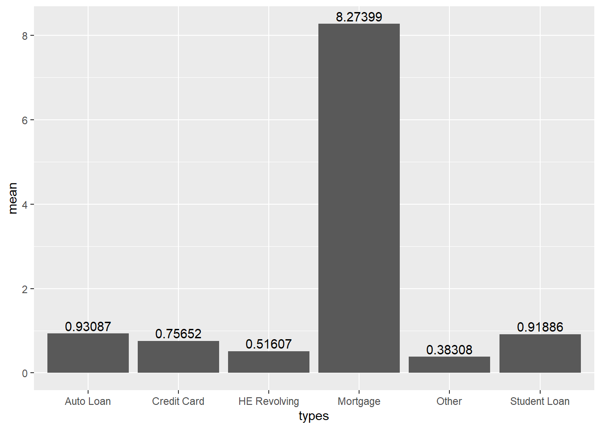
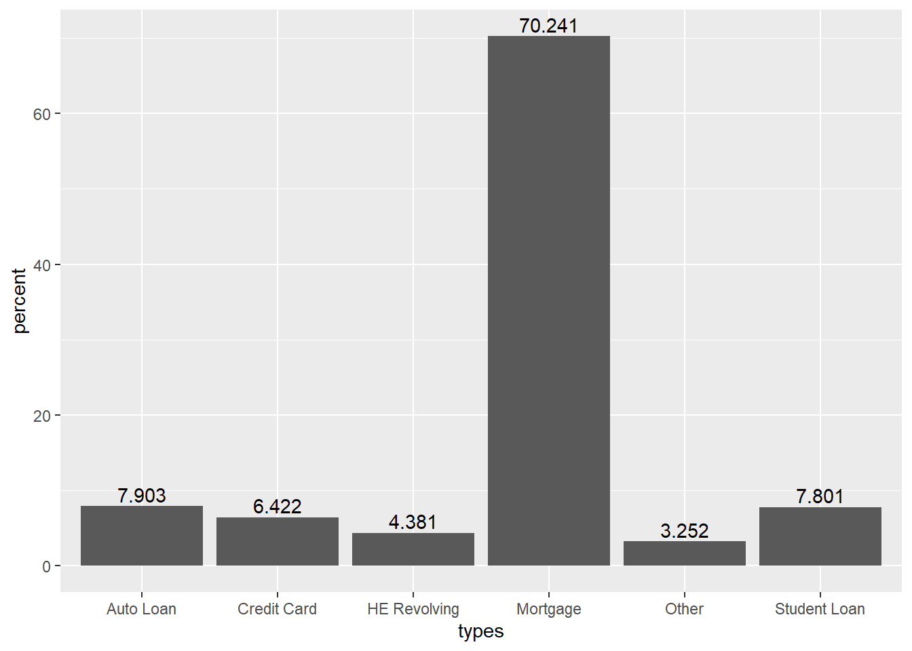

Code
library(tidyverse)
library(readxl)
library(lubridate)
knitr::opts_chunk$set(echo = TRUE, warning=FALSE, message=FALSE)Young Soo Choi
August 28, 2022
Use debt data following homework 2. After creating a date column in the imported data, I tidied the data.
# A tibble: 518 × 3
date types debts
<dttm> <chr> <dbl>
1 2003-01-01 00:00:00 Mortgage 4.94
2 2003-01-01 00:00:00 HE Revolving 0.242
3 2003-01-01 00:00:00 Auto Loan 0.641
4 2003-01-01 00:00:00 Credit Card 0.688
5 2003-01-01 00:00:00 Student Loan 0.241
6 2003-01-01 00:00:00 Other 0.478
7 2003-01-01 00:00:00 Total 7.23
8 2003-04-01 00:00:00 Mortgage 5.08
9 2003-04-01 00:00:00 HE Revolving 0.26
10 2003-04-01 00:00:00 Auto Loan 0.622
# … with 508 more rows
# ℹ Use `print(n = ...)` to see more rowsUsing functions group_by and summarise, the average value and standard deviation of the total amount of debt and the amount of debt by type from the first quarter of 2003 to the second quarter of 2021 were calculated.
# A tibble: 7 × 3
types mean sd
<chr> <dbl> <dbl>
1 Auto Loan 0.931 0.235
2 Credit Card 0.757 0.0688
3 HE Revolving 0.516 0.124
4 Mortgage 8.27 1.18
5 Other 0.383 0.0458
6 Student Loan 0.919 0.428
7 Total 11.8 1.74 In order to find out the proportion of each type of debt, the proportion and the percentage column were added using the mutate function.
# A tibble: 7 × 5
types mean sd pro percent
<chr> <dbl> <dbl> <dbl> <dbl>
1 Auto Loan 0.931 0.235 0.0790 7.90
2 Credit Card 0.757 0.0688 0.0642 6.42
3 HE Revolving 0.516 0.124 0.0438 4.38
4 Mortgage 8.27 1.18 0.702 70.2
5 Other 0.383 0.0458 0.0325 3.25
6 Student Loan 0.919 0.428 0.0780 7.80
7 Total 11.8 1.74 1 100 Looking at the average data for 18 years, it can be seen that the proportion of mortgage is the largest among the total debt. ‘Mortgage’ accounts for about 70.2% of the total, followed by ‘Auto Loan’ with 7.9% and ‘Student Loan’ with 7.8%.
In the case of volatility, it can be identified using the standard deviation, and the standard deviation of ‘Mortgage’ was the highest at 1.18, and the next largest change was ‘Student Loan’, and the standard deviation was 0.42.
Based on the above data, I drew the total amount and proportion of debt by debt type on a bar graph, respectively.


However, looking at the graph, it is difficult to see how the proportion of each type of debt has changed year by year.
In the final report, I’ll expand the scope of the analysis. And for effective visualization, I will add titles, categories, etc. to the graph and use colors to complement the graph to make it easier to recognize.
---
title: "Homework 3"
author: "Young Soo Choi"
desription: "Read and descrive the data"
date: "08/28/2022"
format:
html:
toc: true
code-fold: true
code-copy: true
code-tools: true
categories:
- hw3
---
```{r}
#| label: setup
#| warning: false
#| message: false
library(tidyverse)
library(readxl)
library(lubridate)
knitr::opts_chunk$set(echo = TRUE, warning=FALSE, message=FALSE)
```
## Read and tidy the Data
Use debt data following homework 2. After creating a date column in the imported data, I tidied the data.
```{r}
debt_raw <- read_xlsx("_data/debt_in_trillions.xlsx")
debt<-debt_raw%>%
mutate(date = parse_date_time(`Year and Quarter`,
orders="yq"))
tidy_debt<-debt%>%
pivot_longer(Mortgage:Total, names_to = 'types', values_to = 'debts')
tidy_debt<-tidy_debt%>%
select(-'Year and Quarter')
tidy_debt
```
## Descriptive Statistics
Using functions group_by and summarise, the average value and standard deviation of the total amount of debt and the amount of debt by type from the first quarter of 2003 to the second quarter of 2021 were calculated.
```{r}
ds_debt<-tidy_debt%>%
group_by(types)%>%
summarise(mean=mean(debts),
sd=sd(debts))
ds_debt
```
In order to find out the proportion of each type of debt, the proportion and the percentage column were added using the mutate function.
```{r}
pro_debt<-ds_debt%>%
mutate(pro=round(mean/11.7793751,5), percent=pro*100)
pro_debt
```
Looking at the average data for 18 years, it can be seen that the proportion of mortgage is the largest among the total debt. 'Mortgage' accounts for about 70.2% of the total, followed by 'Auto Loan' with 7.9% and 'Student Loan' with 7.8%.
In the case of volatility, it can be identified using the standard deviation, and the standard deviation of 'Mortgage' was the highest at 1.18, and the next largest change was 'Student Loan', and the standard deviation was 0.42.
## Visualization
Based on the above data, I drew the total amount and proportion of debt by debt type on a bar graph, respectively.
```{r}
pro_debt %>% filter(types!='Total')%>%
ggplot(aes(x=types, y=mean)) +
geom_bar(stat = 'identity')+
geom_text(aes(label=round(mean,5)), vjust=-0.3)
```
```{r}
pro_debt %>% filter(types!='Total')%>%
ggplot(aes(x=types, y=percent)) +
geom_bar(stat = 'identity')+
geom_text(aes(label=round(percent,5)), vjust=-0.3)
```
However, looking at the graph, it is difficult to see how the proportion of each type of debt has changed year by year.
In the final report, I'll expand the scope of the analysis. And for effective visualization, I will add titles, categories, etc. to the graph and use colors to complement the graph to make it easier to recognize.